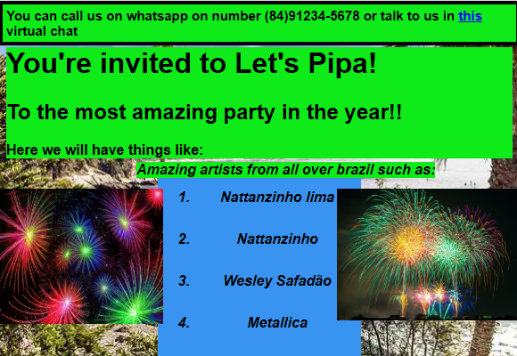
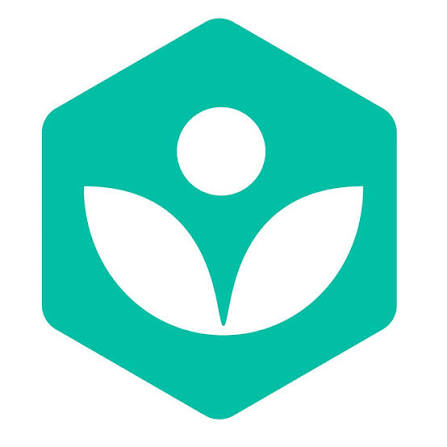
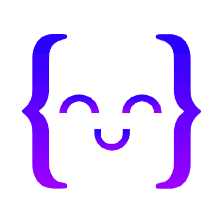
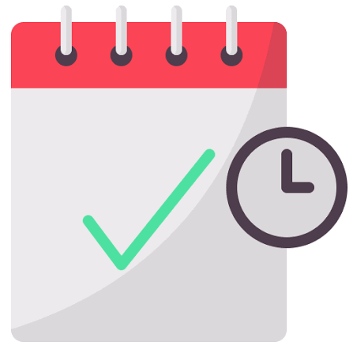

procure pelos projetos aqui:
Agiotism
Quem sou eu?
Sou um estudante de medicina que em seu tempo livre está tentando aprender
a programar , a princípio eu já estudei html e css, e agora estou
estudando javascript, com o objetivo final de me tornar um desenvolvedor
web full stack, e futuramente trabalhar com desenvolvimento de sites.
Projetos!
- Projeto 1

boneco de neve simples do khan academy que fiz no primeiro dia
- Projeto 2

O útlimo projeto do khan academy que fiz depois de aprender o básico
de CSS e HTML, por mais que não fosse nada esplendoroso, fiquei mutio
feliz com o resultado
- Projeto 3

Um dos últimos projetos que eu fiz com js focado em desenho, e por
mais que não dê para ver aqui, ele tem animação e uma função em seu
código.
Currículo:
-
não tenho currículo ainda, mas pretendo fazer um futuramente, e quando
eu fizer eu vou colocar aqui!
estratégias de estudo:
-
Começar pelo khan academy, aprender o básico de programação, e depois
ir para o freecodecamp, e depois ir para o curso de javascript do
udemy, atualmente, na data 18/08/26 eu estou indo para o freecodecamp
depois de acabar com o curso do khanacademy

-
fazer projetos básicos para pegar prática

-
Compromisso diário, mesmo que difícil, para manter o rítmo e a prática

-
e assim que possível começar os desafios diários no leetcode e no
freecodecamp, para ir melhorando a lógica de programação
Contato: email:emailficcional1@gmail.com telefone: (11) 99999-9999